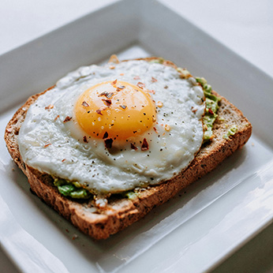

Förrätter

Toast Skagen – 155 kr
Handskalade räkor blandade med majonnäs, dill och citron, serveras på smörstekt bröd.
Carpaccio på nötkött (GF) – 165 kr
Tunt skivat nötkött med ruccola, parmesan, kapris och tryffelolja.
Räksoppa – 145 kr
Krämig räksoppa med vitt vin, serveras med aioli och nybakat bröd.
Burrata med tomat (GF) – 145 kr
Krämig burrata med solmogna tomater, basilika och kallpressad olivolja.
Vitlöksfrästa gambas (GF) – 165 kr
Gambas stekta i vitlök, chili och olivolja, serveras med bröd.
Löjromstoast – 195 kr
Smörstekt bröd toppat med löjrom, rödlök, gräddfil och citron.